1. Exploratory Data Analysis
Dataset Overview
Adult Census Income Dataset contains demographic and occupational information from the 1994 U.S. Census database. Each record includes personal, employment, and economic attributes.
- 48,842 instances × 14 attributes
- Income labels:
<=50Kor>50K - Numerical features:
age, fnlwgt, education-num, capital-gain, capital-loss, hours-per-week - Categorical features:
workclass, education, marital-status, occupation, relationship, race, sex, native-country
Income Distribution
The dataset shows a clearly imbalanced distribution of income labels, with the <=50K class being significantly more frequent than the >50K class.
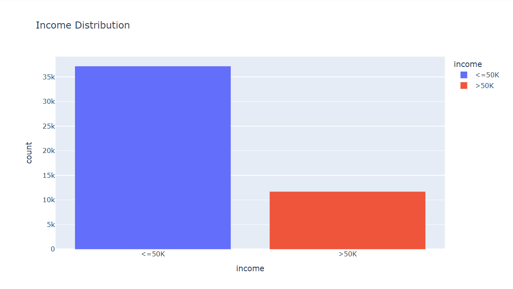
Numerical Features
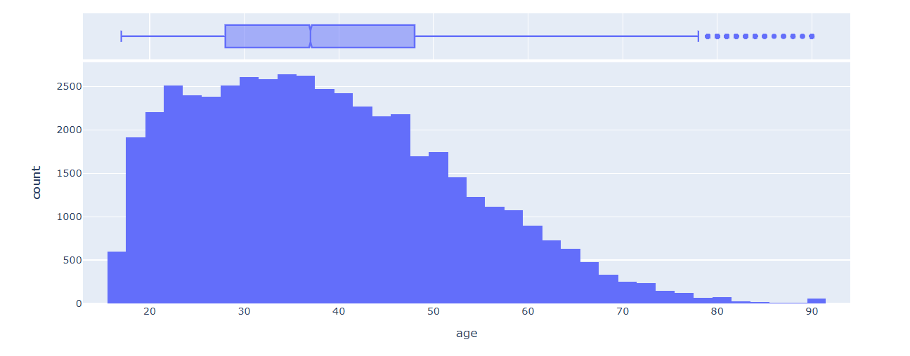
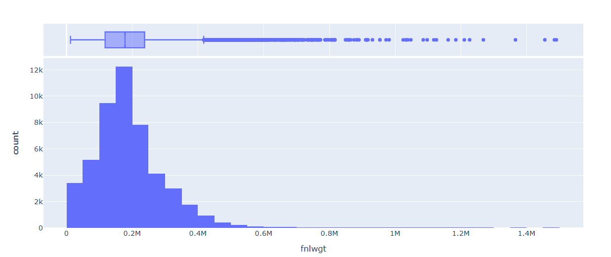
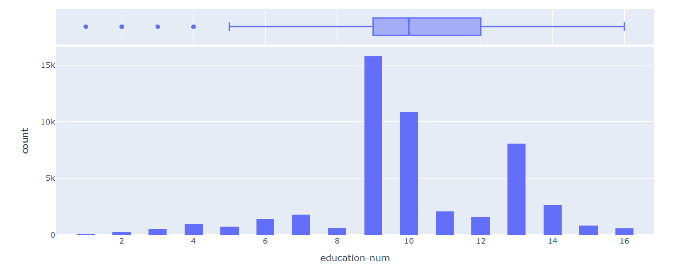
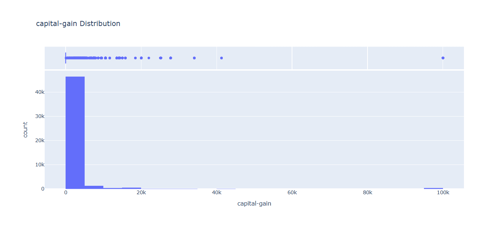
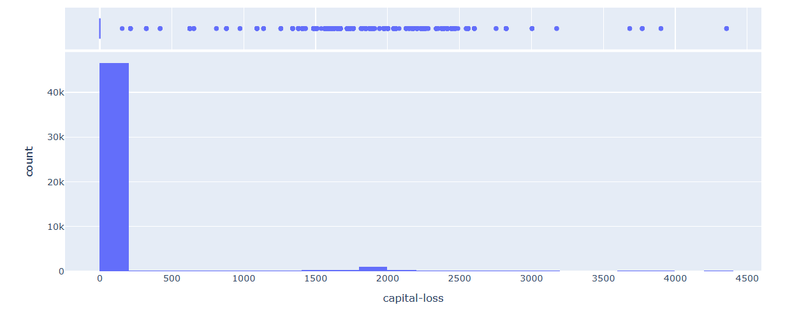
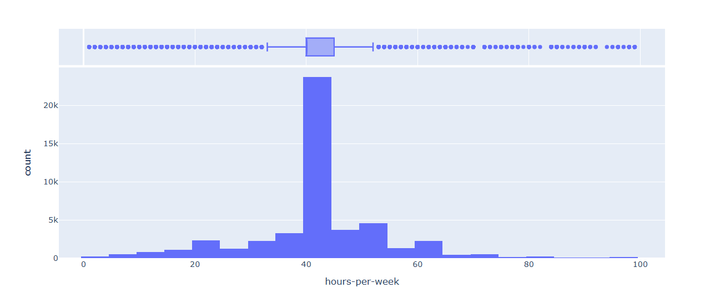
Numerical features such as capital-gain, capital-loss, fnlwgt are highly skewed.
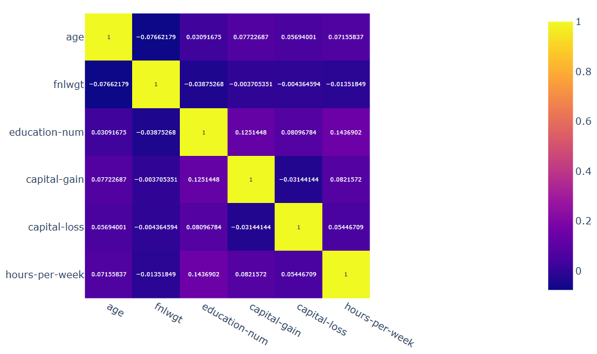
Most of the correlation coefficients are close to 0 (–0.07 - 0.14), indicating that there are no strong linear relationships among the continuous variables in the dataset.
Categorical Features
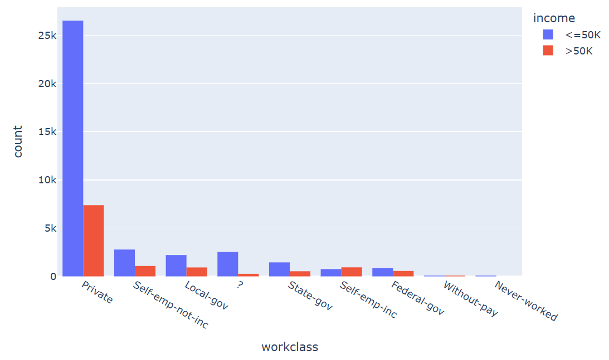
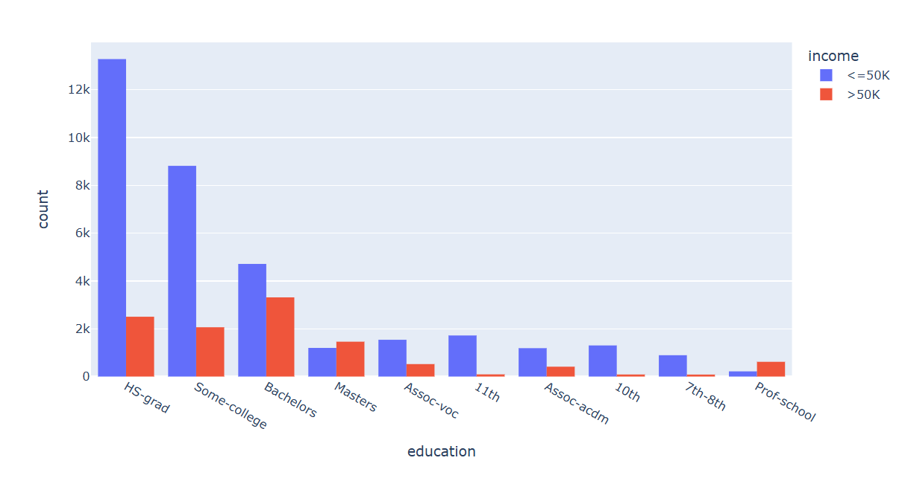
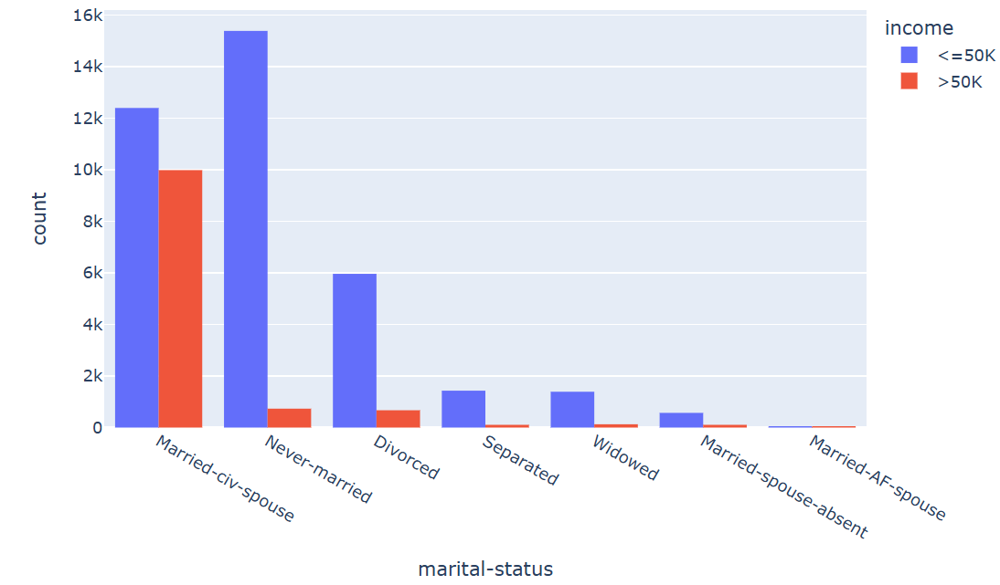
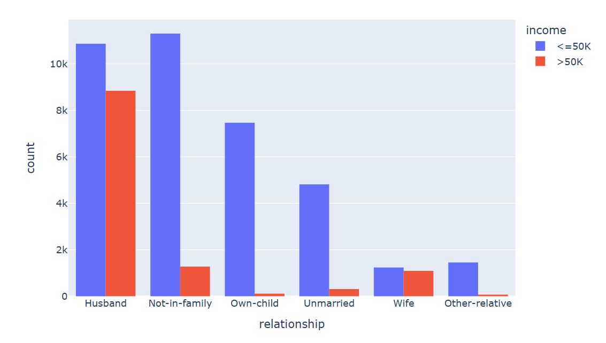
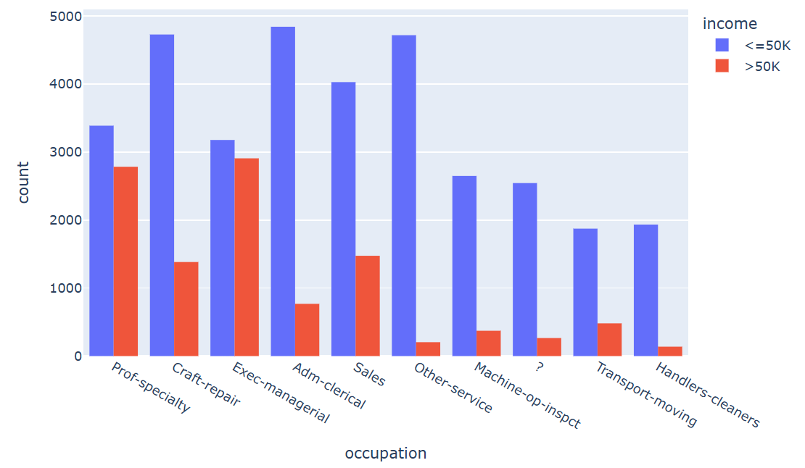
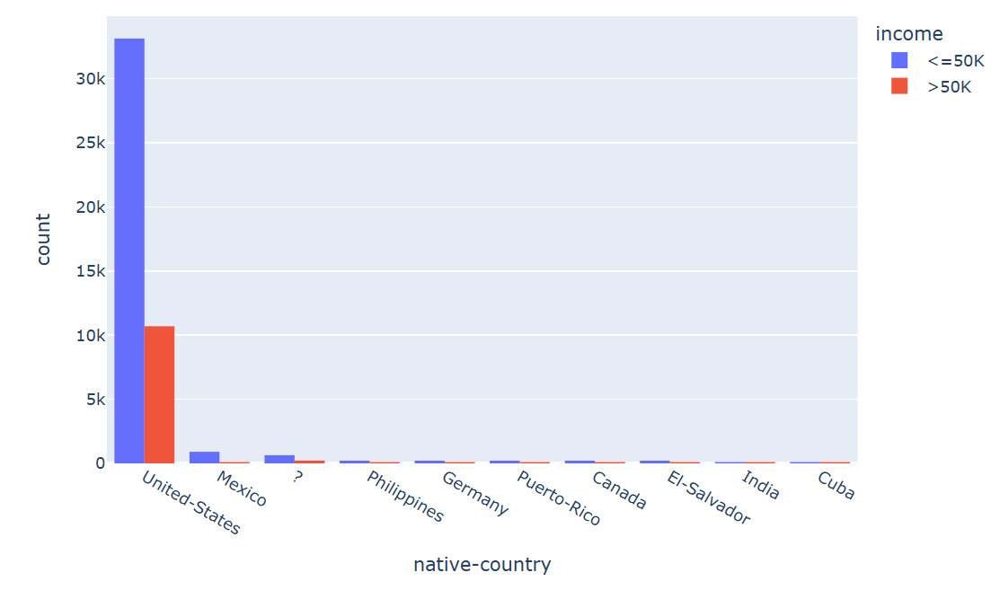
Categorical features like education, occupation, native-country have a large number of unique categories.
Missing values
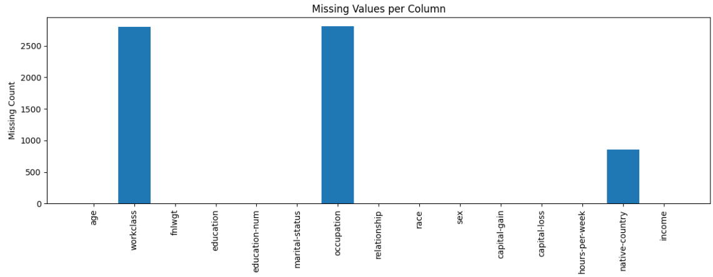
The dataset contains three columns with missing values, including workclass, occupation and native-country.
2. Data Preprocessing
Train/Val/Test split with stratification:
The dataset is split into 70% for training, 15% for validation, and 15% for testing.
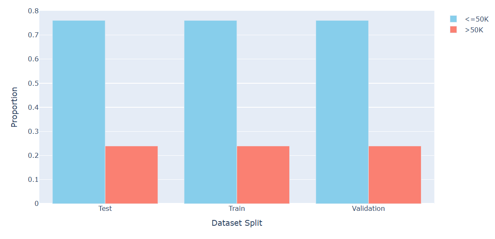
Imputation of Missing Values:
Numerical features: missing values were handled using strategies
median.Categorical features: missing categories were filled using
constant.
Encoding Categorical Features:
One-Hot Encoding: converts each category into a binary vector.
Feature Scaling:
Standard Scaling: transforms numerical features to have zero mean and unit variance.
Dimensionality Reduction:
Principal Component Analysis (PCA) can be applied to reduce dimensionality while retaining most of the variance (e.g 90%, 95%).
3. Models
Machine Learning Models: Logistic Regression, Support Vector Machine (SVM), Random Forest, Decision Tree, K-Nearest Neighbor (KNN), Gaussian Naive Bayes
Deep Learning Models:
Wide & Deep Neural Network: combines a wide linear model (memorization) with deep neural networks (generalization) for structured data.
TabNet: uses sequential attention to choose which features to reason from at each decision step, suitable for tabular data.
Metrics: F1-Score
| Rank | Model | PCA | Accuracy | Precision | Recall | F1-Score |
|---|---|---|---|---|---|---|
| 1 | TabNet | - | 0.87171 | 0.7387 | 0.71763 | 0.72801 |
| 2 | Logistic Regression | 0.95 | 0.84973 | 0.73023 | 0.58985 | 0.65257 |
| 3 | SVM | 0.95 | 0.85506 | 0.76556 | 0.56817 | 0.65226 |
| 4 | Logistic Regression | 0.9 | 0.84823 | 0.73008 | 0.58015 | 0.64654 |
| 5 | Wide & Deep Neural Network | - | 0.84578 | 0.64631 | 0.78494 | 0.64631 |
| 6 | SVM | 0.9 | 0.85287 | 0.76102 | 0.56132 | 0.64609 |
| 7 | Random Forest | 0.95 | 0.84509 | 0.71429 | 0.58756 | 0.64476 |
| 8 | Random Forest | 0.9 | 0.84264 | 0.70833 | 0.58186 | 0.6389 |
| 9 | KNN | 0.95 | 0.83977 | 0.69469 | 0.58928 | 0.63765 |
| 10 | KNN | 0.9 | 0.84168 | 0.70547 | 0.58072 | 0.63705 |
| 11 | Decision Tree | 0.9 | 0.83308 | 0.70385 | 0.52196 | 0.59941 |
| 12 | Decision Tree | 0.95 | 0.83213 | 0.69916 | 0.52367 | 0.59883 |
| 13 | Gaussian Naive Bayes | 0.95 | 0.80237 | 0.58338 | 0.60867 | 0.59576 |
| 14 | Gaussian Naive Bayes | 0.9 | 0.81152 | 0.61425 | 0.57045 | 0.59154 |
TabNet achieved the highest overall F1-score across all models, outperforming traditional machine learning approaches because it is specifically designed for tabular data with a column-wise attention mechanism.
Logistic Regression and Support Vector Machine achieved the highest F1-score
(~0.65)compared to the other machine learning models.Wide & Deep Neural Network achieved moderate performance, with low precision but highest recall (~78), indicating a tendency to overpredict the positive class.
Gaussian Naive Bayes showed the lowest performance in the table (F1-Score ~0.59), indicating that its independence assumption does not align well with the dataset.
Using PCA that retains 95% of the variance performs better compared to using PCA with 90% variance.
4. Conclusion
- Deep learning models tend to achieve higher predictive performance on complex tabular data, especially when interactions among features are non-linear.
- Proper preprocessing significantly impacts model performance more than simply changing algorithms.
- Using PCA with 95% variance retains more information than 90%, often leading to better model generalization.
- TabNet is recommended when leveraging deep learning for tabular datasets